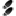

Introduction
This is the Devices-Status counterpart for nodes. It gathers all related database information amongst some
realtime scans and displays everything in one page.
Usage
- You'd usually land here coming from other modules like Nodes-List. Alternatively you can enter/paste
a MAC-address in any common format (grouped by - or . or : or plain HEX).
- If you need the MAC-address in a CLI window of a device, simply copy the appropriate format below the toolbar.
 View syslog events coming from this IP (if available).
View syslog events coming from this IP (if available).
 Get the status of the connecting device.
Get the status of the connecting device.
 Visible for users in the helpdesk group to send 2 Wake on Lan packets to the
node. The first one is a diected broadcast to the subnet of the node and the second one is a local broadcast.
Visible for users in the helpdesk group to send 2 Wake on Lan packets to the
node. The first one is a diected broadcast to the subnet of the node and the second one is a local broadcast.
-  Visible for users in the helpdesk group to mark this node as stolen.
 Allows administrators to delete the node.
Allows administrators to delete the node.
Those to actions will be available, if the node was seen during the last discovery:
 Scans node for open ports.
Scans node for open ports.
 Try to discover as an SNMP device.
Try to discover as an SNMP device.